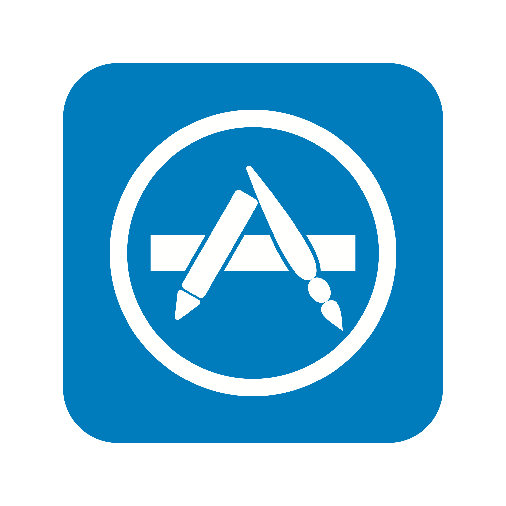

<mat-toolbar color="primary" *ngIf="currentUser">
  <span>
    
    Mentor Application
  </span>
  <span class="fill-remaining-space"></span>
  <button mat-button>Home</button>
  <button mat-button (click)="logout()">Logout</button>
  <button class="current-user" mat-button>{{currentUser.username}} ({{currentUser.userType}})</button>
</mat-toolbar>


<div class="jumbotron jumbotron-fluid">
  <div class="container">
    <router-outlet></router-outlet>
  </div>
</div>
